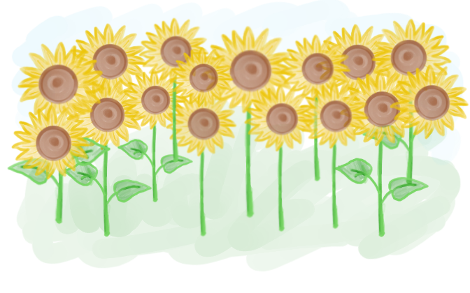

Harmony
Surveying the meadow, you spot giant sunflowers stretching towards the sun. Dancing bees adorn their bright petals. Somewhere among them must be the Sunflower Bees' honey. You observe the bees flitting between flowers, detecting patterns in their movements. With care not to disrupt them, you may be able to collect some honey.